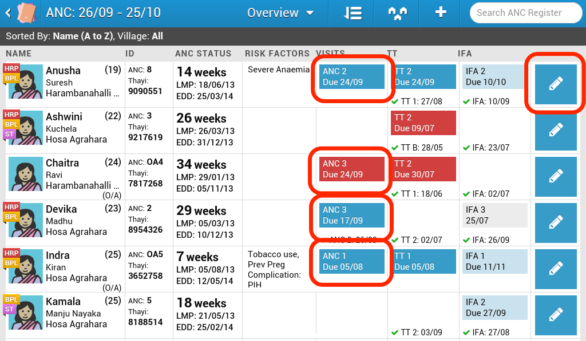
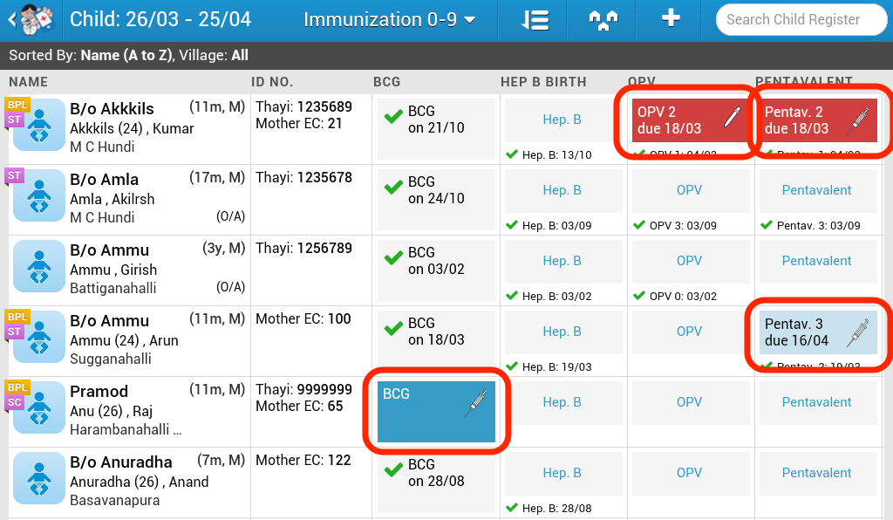
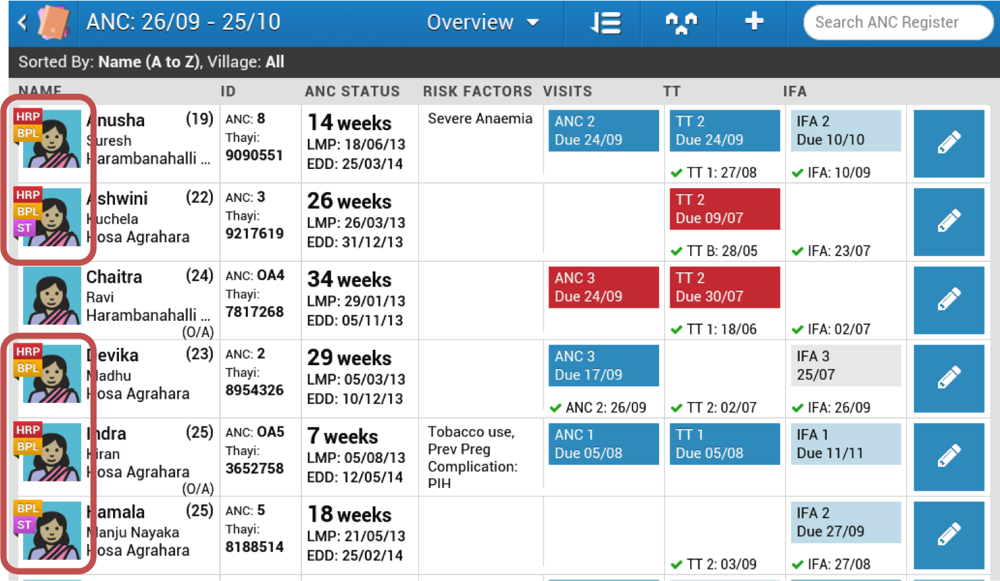
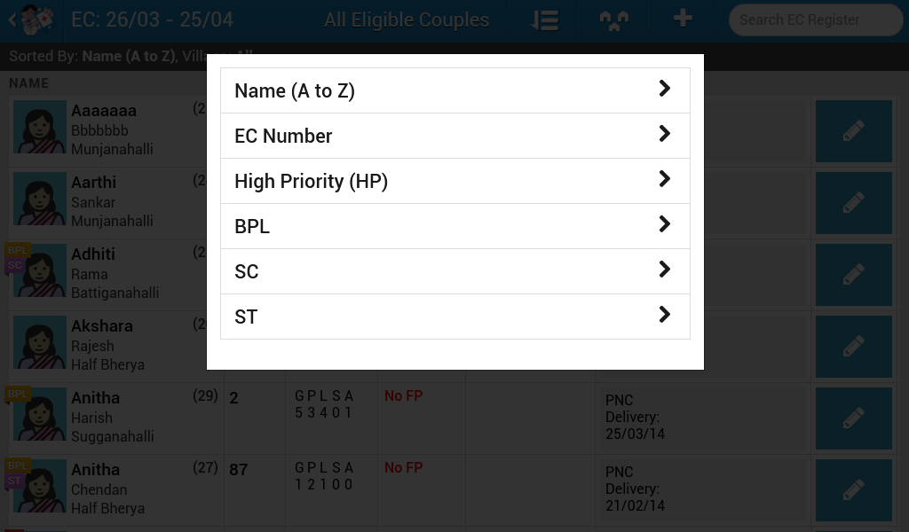

OpenSRP uses advanced, multi-parameter scheduling logic to ensure frontline health workers provide services in alignment with national and global health standards of care. Health service reminders are displayed as color-coded alerts to the health worker based on the urgency of the service due, ensuring that clients receive appropriate and timely healthcare.


OpenSRP uses Enketo Smart Paper webforms for data entry. Forms are launched directly from the smart registers at the tap of a button and allow for offline data entry in areas where a network connection is not always available. Data submitted in the form instantly updates the patient’s record in the smart register without requiring an initial sync with the server. Data is safely stored offline until the device has a network connection and the data is submitted to the secured server.
Enketo forms are the next evolution of webforms, as they allow the user to enter data in a non-linear and less restrictive format, which is a critical factor for user uptake and satisfaction. Skip logic becomes visible, allowing the health worker to see data fields expand or collapse based on their input. Enketo forms are written using the XLSForm standard, which allows users to have the control they need in their forms to ensure high data quality and fidelity.
OpenSRP has the ability to automatically profile and flag patients who are at high risk for adverse health outcomes. Profiling logic can be customized to the local health setting and is embedded in the form logic. Health workers are alerted to high risk cases when they look up the patient and at the point of data entry. Customized messages and decision support in the forms are based on the specific risk profile of the client and serve to remind the health worker of appropriate medical guidelines and protocols.

With paper registers, client lists are static, which makes patient lookups difficult. For frontline health workers, who often go door to door to provide health checkups, it would be useful to have a way to dynamically filter, sort, and search for her clients based on her movements through her community or catchment area.
OpenSRP has a customizable array of dynamic sort and filter options to rearrange and filter down lists of clients to better match a health worker’s immediate work needs. Once time-consuming tasks such as looking up clients by family planning method becomes effortless


Paper-based reporting and manual calculation of health indicators remains a burden for health workers all over the world, especially in settings where resources are limited and patient load is high. One of the benefits of switching to a digitized record-keeping system is the ability to automate and standardize reporting at all levels in the healthcare system. Data which is entered through Enketo webforms in OpenSRP is automatically aggregated and can be displayed back to the health worker in a separate reporting module. By integrating with OpenMRS, users can take advantage of the robust reporting module in OpenMRS to create advanced reports that can match existing government templates.
OpenSRP supports multimedia use for clients, such as health education and counseling videos. Health workers can easily switch from their smart register view to the video module during patient encounters to couple health service provision with client education and counseling.
As more and more countries adopt eHealth systems, including OpenSRP, attention quickly shifts to the need for integration of existing electronic health systems to ensure the continuity of care for patients within a population and to eliminate duplicate efforts. By integrating with OpenMRS, patient data that is entered in OpenSRP also becomes available in OpenMRS. In health settings where governments have adopted OpenSRP at the community level and OpenMRS in hospitals and other tertiary level facilities, patients can easily start treatment at their community health center and then subsequently seek care at a hospital or other higher level facility and have their medical records be securely and automatically transferred.